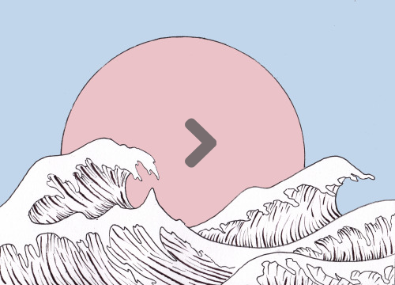

~ ABOUT ~
An Introduction

Art. Art lies extremely deep within Sikha, and I believe that if she really wanted, she can truly convey admiration in a picture.
Architecture. The very word screams Dr. Seuss esque design and the angry failed attempts of measurements which, lacks precision either way. You see, the definition of Architecture varies and has held quite a debate amongst famous architects alike;
"Architecture is the learned game correct and magnificent of forms assembled in the light."
- Le Corbusier
"Architecture is inhabited sculpture."
- Constantin Brancusi
"The art and science of designing buildings and (some) nonbuilding structures."
- Unknown
However, for our dear old Sikha these definitions are somewhat indiffirent to hers. She would find some of the following, more suitable;
"Stressful."
- Sikha Shrestha
"Stressing."
- Sikha Shrestha
"I'm hungry."
- Sikha Shrestha
I guess the point I'm trying to put across here is that, Sikha(who is studying to become an Architect) doesn't even want to be an Architect or at least not enjoying it as much as she thought.
Yet the best choice is to just float through it all, because your malleable fate is pretty much yours to manipulate.
Sikha is just waiting for her opportunity. If she truly believed.Hers Truly
If you haven't read the column on the left "An Introduction", please do. If you've done so then hi. As you can probably guess the author of the overall site is not Sikha herself, but some other mysterious web developer (as he so vaguely titles himself) randomly writing on these empty minimalist pages.
For some, it may already be obvious who I am, but for others, they may be competely oblivious of my identity. For those people who don't know who I am, they have a chance to find my true identity by going to the "Secret" link on the navigation bar.
It won't be that easy thought. You get to pass some security first. Have fun with that.
Anywho. This is a page about Sikha Shrestha, a very okay girl, with a very not-okay attitude. Just kidding, she's not an okay girl neither. Some basic information about her is that she is Nepalese, short as a duck and very ill... like all the time.
Amongst her favourite things to do are; watch movies or TV series (does anyone even watch TV anymore), do weird dances and eat delicious (mostly Asian) cuisine. Such as these:
This image would likely make her salvate and slurp.
If you're a massive fan of anything Asian (preferably Korean), you will likely get along with Sikha, as she has some weird obsession, almost unhealthy (get it? cause food).
Anyways. I hope you enjoy these pages as much as I have enjoyed making them.
Oh this isn't goodbye at all. I'll be around, don't cry.
~ CONTACT ~
The charming ways of contact:
Telephone
This information has been disclosed by the following owner and/or admin : [Shrestha, Sikha]
Twitter information unavailable. Sikha Shrestha does not have twitter. OR maybe she does but she doesn't use it anymore.
Alright I'll give you this one. So that you came here for a reason at least! Go stalk her Facebook page here:

Update: link doesn't really work. For some unknown reasons.
ejpart3@hotmail.co.uk
Okay, this may not be her email per se but well... you can contact me instead. You know cause I'm relevant(?).
Address
You still don't get it do you?
~ MEDIA ~
Do you want to see some magnificent photography?
You've come to the right place. This section connects you to another page that has professional photos by Sikha Shrestha herself. You may also find other media such as videos and audio.
All you have to do is click on the image below and it will lead you to the photography page.
Typically this link should be working. However if you're having trouble, try a few mirror links:
Typically these should work, but if not,then you're on your own. It should work because they're all the same links. Sorry. Now ignore some of the following because it's mumbo jumbo.
Since this page is about media, here are a few disclaimers for the images I've been using:
I do not own some of the images listed here, and do not claim any ownership of them. I am using them for commercial purposes only. Full resolutions list can be requested and downloaded. All images are included in the /images file from root directory of this site. I do however claim ownership of some images listed here and to the links leading from this page
~ SECRET ~
Secrets are meant to be kept not shared
So you've come to unlock the secret page.
It's pretty simple really. Just answer this cool riddle that I made. Nice and easy... right? If you still need some help why don't you peruse these pages longer, I promise it's easier that way. And (my english teacher told me never to start a sentence with 'and', but oh well. ***** you Mr. Dunn) now for the riddle!
She is
Her golden skin inflicts blindness to those who stare. The rose petals follow suit around her footsteps. Sketical is he, enigmas are flung. Isn't she?
So simple her hair forms, so mellow her lips are filled with little touches of angels. Isn't she?
Life and love are the same, I never thought she'd love me the same. The meaning of her name makes me wonder. Isn't she?
- by Me
It's a little intimidating I know but this is all the clue you'll get, plus something(s) around this website. Look and read thoroughly and it will be clear. If you think you know the answer then fill in the follow box:
What is the Key phrase?
Incorrect!
Sikha Shrestha, Architecture, 19
NEPAL, Kathmandu (Currently studying in the UK)
"Colourful and smart... when need be."
- Erlo Tayamen, Boyfriend